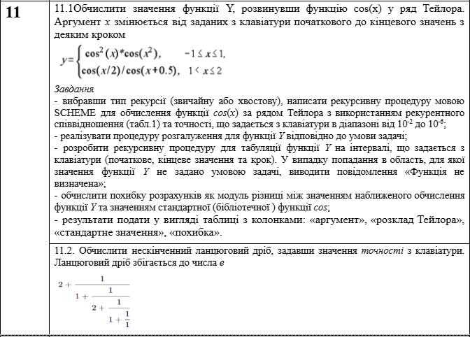
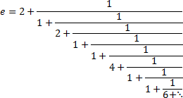
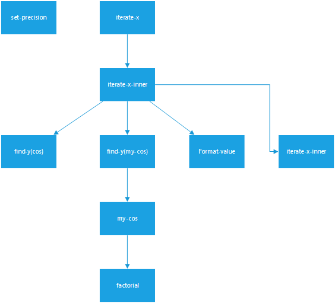
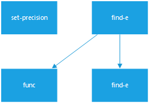
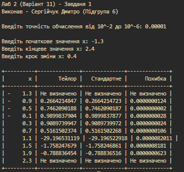
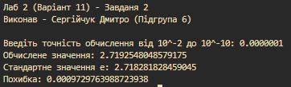

Мета
Сформувати декларативне мислення в галузі програмування завдяки застосуванню принципів функціонального програмування. Опанувати техніку застосування рекурсивних функцій для обчислювальних процесів і здійснити дослідження ефективності рекурсивних процесів.
Умова
Аналіз
Завдання 1
Для виконання даного завдання, потрібно реалізувати знаходження косинуса за допомогою ряду Тейлора:
Ця функція вимагає пошуку факторіала числа, що можна реалізувати за допомогою хвостової рекурсії. Рекурсія має акумулятор acc, який позначає попереднє значення факторіала (початкове значення 1), поточну ітерацію current (початкове значення 1), а також число n, для якого потрібно знайти факторіал. Поки current менше за n, то виконується повторний виклик рекурсії, де acc обчислюється через множення попереднього значння на current. Якщо current досяг n, то повертаємо acc помножене на current.
Завдання 2
Нескінченний дріб, для визначення e має такий вигляд:
Потрібно реалізувати функцію для обчислення даного дробу до n вкладувань. Це можна реалізувати через розділення дробу на функції вигляду: d + 1/x, де d - належить послідовності: [2, 1, 2, 1, 1, 4, 1, 1, 6, 1, 1, 8, ...], x - функція з наступним значенням d з послідовності.
Далі створюється рекурсивна функція, яка приймає попереднє значення дробу - val (початкове значення 2), поточну ітерацію = індекс d - iter (початкове значення 1), функцію func (початкове значення 2 + 1/x) і точність обчислення. На кожному рівні рекурсії обчислюється next-d - наступне d з послідовності. До функції func передається next-d, результат чого використовується як поточне значення нескінченного дробу. Якщо модуль різниці даного значення та val менший за точність, то рекусрія завершується, інакше до наступного рівня рекурсії передається нова функція вигляду: func(next-d + 1/x), що просуває обчислення нескінченного дробу на один рівень глибше
HIPO Діаграма
Завдання 1
Завдання 2
Код
Code: Task1
#lang racket
(displayln "Лаб 2 (Варіант 11) - Завданя 1")
(displayln "Виконав - Сергійчук Дмитро (Підгрупа 6)")
(newline)
(define (set-precision)
(display "Введіть точність обчислення від 10^-2 до 10^-6: ")
(define precision (read))
(if (and (>= precision 10e-6) (<= precision 10e-2))
precision
(begin
(displayln "Введена точність не входить у діапазон [10^-6; 10^-2]")
(set-precision))))
(define (factorial n [acc 1] [current 1])
(cond
[(= current n) (* acc current)]
[else (factorial n (* acc current) (+ current 1))]))
(define (my-cos x precision [value 1] [prev 0] [sign #false] [k 2])
(define diff (abs (- value prev)))
(cond
[(< diff precision) value]
[else
(define v (/ (expt x k) (factorial k)))
(if sign
(my-cos x precision (+ value v) value #false (+ k 2))
(my-cos x precision (- value v) value #true (+ k 2)))
]))
(define (find-y x cos-func)
(cond
[(and (<= -1 x) (<= x 1))
(* (expt (cos-func x) 2) (cos-func (expt x 2)))]
[(and (< 1 x) (<= x 2))
(/ (cos-func (/ x 2)) (cos-func (+ x 0.5)))]
[else #false]))
(define (format-value val prec max)
(if (< val 0)
(~r val #:precision (- prec 1) #:min-width (- max 1))
(~r val #:precision prec #:min-width max)))
(define (iterate-x current max step precision)
(define (my-cos-wrapper x)
(my-cos x precision))
(define not-found-message "Не визначено")
(define not-found-message-length (string-length not-found-message))
(define prec (min 10 (- not-found-message-length 2)))
(define x-prec 8)
(printf "+----------+--------------+--------------+--------------+\n")
(printf "| x | Тeйлор | Стандартне | Похибка |\n")
(printf "+----------+--------------+--------------+--------------+\n")
(define (iterate-x-inner current max step)
(define real (find-y current cos))
(define est (find-y current my-cos-wrapper))
(define x-str (format-value current x-prec x-prec))
(cond
[(number? est)
(define est-str (format-value (exact->inexact est) prec not-found-message-length))
(define real-str (format-value real prec not-found-message-length))
(define err (exact->inexact (abs (- real est))))
(define err-str (format-value err prec not-found-message-length))
(printf "| ~a | ~a | ~a | ~a |\n" x-str est-str real-str err-str)]
[else
(printf "| ~a | ~a | ~a | ~a |\n" x-str not-found-message not-found-message not-found-message)])
(cond
[(<= (+ current step) max)
(iterate-x-inner (+ current step) max step)]))
(iterate-x-inner current max step)
(printf "+----------+--------------+--------------+--------------+\n"))
(define precision (set-precision))
(newline)
(display "Введіть початкове значення x: ")
(define x1 (read))
(display "Введіть кінцеве значення x: ")
(define x2 (read))
(display "Введіть крок зміни x: ")
(define step (read))
(newline)
(if (< x1 x2)
(iterate-x x1 x2 step precision)
(iterate-x x2 x1 step precision))
Code: Task 2
#lang racket
(displayln "Лаб 2 (Варіант 11) - Завданя 2")
(displayln "Виконав - Сергійчук Дмитро (Підгрупа 6)")
(newline)
(define (set-precision)
(display "Введіть точність обчислення від 10^-2 до 10^-10: ")
(define precision (read))
(if (and (>= precision 10e-10) (<= precision 10e-2))
precision
(begin
(displayln "Введена точність не входить у діапазон [10^-10; 10^-2]")
(set-precision))))
(define (find-e precision [val 2] [func (lambda (x) (+ 2 (/ 1 x)))] [iter 1])
(define next-denominator (cond
[(= iter 1) 1]
[(= iter 2) 2]
[(= (modulo (- iter 2) 3) 0) (* (/ (- iter 2) 2) 2)]
[else 1]))
(define next (func next-denominator))
(cond
[(<= (abs (- val next)) precision) next]
[else
(define (next-fun x)
(+ next-denominator (/ 1 x)))
(find-e precision next (lambda (x) (func (next-fun x))) (+ iter 1))]))
(define precision (set-precision))
(define est (exact->inexact (find-e precision)))
(define real (exp 1))
(printf "Обчислене значення: ~a\n" est)
(printf "Стандартне значення e: ~a\n" real)
(printf "Похибка: ~a" (abs (- real est)))
Результати
 Перевірка
Завдання не потребують окремої перевірки. Серед результатів вже демонструється похибка вимірювань, що показує досить незначне відхидення від результатів, отриманих через використання станадартних функцій для обчислення косинуса та значення e. Це можна вважати підтвердженням коректності реалізації функцій
Перевірка коду ШІ
Завдання 1
Введний запит: "чи відповідає даний код на мові програмування racket критеріям простоти та clean code? (код завдання №1)"
Відповідь Chat GPT
✅ Позитивні моменти:
- Структурованість — код логічно поділений на функції з чіткими завданнями: set-precision, factorial, my-cos, find-y, format-value, iterate-x. Це добре.
- Рекурсивний стиль — відповідає ідеології Racket/Lisp, виглядає природно.
- Використання додаткових аргументів у рекурсії (factorial, my-cos) для акумуляції результатів — це ефективний підхід.
- Перевірки на коректність введення (set-precision) — хороший знак уваги до надійності.
- Форматований вивід таблиці — виглядає чисто, не хаотично.
⚠️ Можливі проблеми з clean code:
-
Змішування вводу/виводу та логіки
- У функціях set-precision, iterate-x є і читання/друк, і обчислення. Це ускладнює повторне використання коду.
- Краще розділити: функції повинні або рахувати, або відповідати за IO, але не обидва разом.
-
Невдале іменування:
- my-cos — виглядає як тимчасове ім’я. Краще назвати taylor-cos чи approx-cos.
- find-y не пояснює, що саме обчислюється (наприклад, можна назвати compute-y чи piecewise-function).
- iterate-x більше схоже на цикл, а не на функцію, що повертає результат. Можна перейменувати в print-results-for-x-range.
- set-precision — рекурсивний виклик для повторного вводу Це працює, але виглядає трохи “грубувато”. У більш чистому варіанті варто мати цикл для повторного вводу, щоб було зрозуміліше.
-
Магічні числа:
- 10e-6, 10e-2 краще винести у константи MIN-PRECISION, MAX-PRECISION.
- Ширина колонок у таблиці (+----------+...) теж могла б бути константами.
- Умови if та cond трохи перевантажені - У деяких місцях можна спростити логіку. Наприклад, у my-cos замість if sign ... else ... можна використати множник sign (+1/-1).
✨ Як можна зробити простіше і чистіше:
- Винести обчислювальні функції (factorial, taylor-cos, find-y) окремо від ввід/вивід функцій.
- Використовувати більш зрозумілі імена (taylor-cos, compute-piecewise-y, print-results).
- Замість рекурсії для set-precision зробити цикл введення.
- Винести "магічні значення" у константи.
👉 Загальний висновок:
Код працює і читається, але він більше схожий на навчальний приклад, ніж на чистий production-код. Для критеріїв простоти – так, відповідає. Для clean code – місцями бракує відокремлення логіки від вводу/виводу та кращих імен.
Завдання 2
Введний запит: "чи відповідає даний код на мові програмування racket критеріям простоти та clean code? (код завдання №2)"
✅ Плюси коду:
- Структурованість - Є окрема функція для точності (set-precision) і окрема — для обчислення e (find-e). Це добре.
- Рекурсивний підхід - В find-e правильно використовується рекурсія для обчислення наближення
- Чистота коду - Код виглядає акуратно, без зайвих вкладень чи дублювань, легко простежити логіку
- Валідність введення - У set-precision є перевірка діапазону та повторний запит при некоректному введенні.
⚠️ Недоліки щодо clean code:
- Змішування вводу/виводу та логіки - set-precision читає дані і перевіряє їх. Краще відділити: одна функція читає користувацьке введення, інша перевіряє його.
-
Іменування
- find-e — зрозуміло, але можна уточнити (approx-e або continued-fraction-e).
- val та func звучать занадто загально. Варто дати імена, які передають сенс (наприклад, current-value, fraction-func).
- next-denominator гарна назва, але сама логіка в cond виглядає трохи громіздкою. Її можна винести у функцію compute-denominator.
- Магічні числа - Діапазон точності (10e-10, 10e-2) варто винести в константи, наприклад MIN-PRECISION, MAX-PRECISION.
- Вивід результату прямо в коді - Код завершується друком результатів. У чистому стилі краще відділити обчислення (функції) від форматування/виводу
- Рекурсивний set-precision - Як і у попередньому коді, повторний виклик функції для введення виглядає менш чисто, ніж цикл з перевіркою.
✨ Поради для покращення clean code:
- Винести магічні значення (10e-10, 10e-2) у константи
- Перейменувати змінні (val, func) у більш зрозумілі
- Відокремити логіку обчислення від вводу/виводу (щоб find-e можна було використовувати незалежно від консолі)
- Замість рекурсії у set-precision краще зробити цикл запиту
👉 Висновок:
Код простий і досить акуратний, він читається й не перевантажений. Але до ідеального clean code йому бракує: кращих імен, відсутності “магічних чисел” та розділення вводу/виводу від логіки.
Висновок
Під час виконання даної роботи були покращенні вміння роботи з умовами в racket. Також було продемонстровано роботу з форматуванням тексту через використання ~r, а також використання значень за замовчуванням для аргументів функцій, що особливо корисно для уникнення помилок під час виклику функцій, які використовують акумулятори, де початкове значення строго визначене.